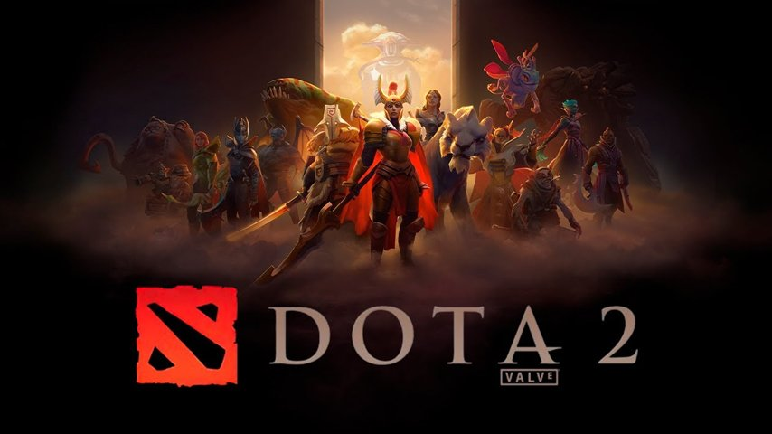
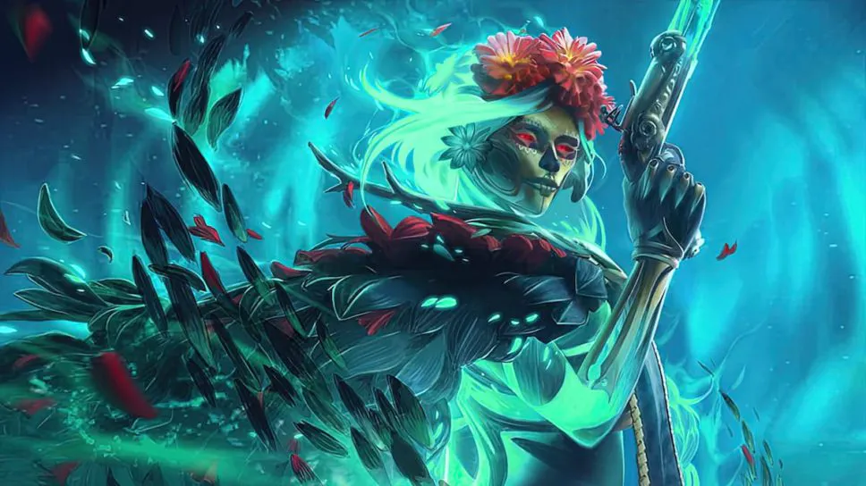

Dota 2 - це відеогра у жанрі MOBA (мультиплеєрна онлайн багатокористувацька арена), розроблена і випущена компанією Valve Corporation. Гра є наступницею популярного моду для гри Warcraft III і виросла в одну з найвизначніших електронних спортивних дисциплін.
У Dota 2 гравці утворюють команди і керують героями з унікальними навичками, які використовуються для перемоги над командою супротивника. Гра базується на стратегічному плануванні, співпраці і майстерності.
Цей світ захоплюючих сутичок і великих стратегічних рішень чекає на вас у Dota 2!
В Dota 2 на даний момент присутні 124 герої. Спробуйте їх всіх!
В Dota 2 проводяться різноманітні турніри та чемпіонати з численними командами і гравцями з усього світу. Професійна сцена гри постійно розвивається, і фанати отримують можливість спостерігати за захоплюючими матчами на високому рівні.
На останньому турнірі The International 12 з призовим фондом $3,380,455 виграла команда Team Spirit. В своєму складі вона має 2 гравців з Украх